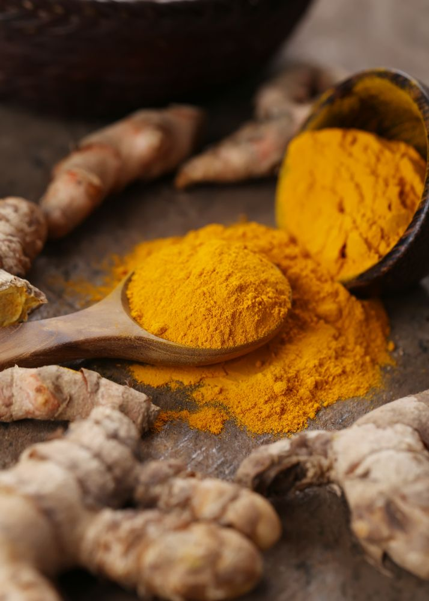

Turmeric Cultivation Guide

1. Climate & Soil
Prefers warm and humid climate; ideal temperature: 20–30°C.
Well-drained loamy or alluvial soils rich in organic matter, pH 4.5–7.5.
2. Land Preparation & Planting
Land should be plowed 3–4 times and leveled well.
Planting season: April to June depending on rainfall onset.
Rhizomes (mother & finger) used as seed material.
Spacing: 30 cm x 25 cm with planting depth of 5–6 cm.
3. Irrigation
Initial irrigation immediately after planting.
Subsequent irrigation every 7–10 days depending on weather and soil type.
4. Fertilization
FYM: 20–25 tons/acre before planting.
NPK: 60:50:120 kg/acre applied in 3 splits (30, 60, 90 DAP).
5. Weed & Pest Management
Weeding at 30, 60, and 90 days after planting.
Pests: Shoot borer, rhizome scale — use neem oil and recommended insecticides.
Diseases: Leaf spot, rhizome rot — treat with fungicides like Mancozeb or Trichoderma.
6. Investment Breakdown (Per Acre)
Input
Estimated Cost (INR)
Seed Rhizomes
₹15,000 – ₹20,000
FYM & Fertilizers
₹6,000 – ₹9,000
Pesticides/Fungicides
₹2,000 – ₹3,000
Labor & Irrigation
₹8,000 – ₹12,000
Total Investment
₹31,000 – ₹44,000 per acre
7. Harvest & Yield
Harvested 8–9 months after planting when leaves start drying.
Expected yield: 80–100 quintals of fresh rhizomes per acre.
8. Market Rate & Returns
Market rate: ₹6 – ₹12 per kg (fresh rhizomes).
Gross return: ₹48,000 – ₹1,20,000 per acre.
Net profit: ₹17,000 – ₹76,000 per acre.